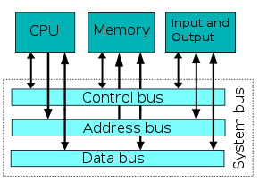

Descrizione
Lo schema si basa su cinque componenti fondamentali:
- CPU(importantissima in un pc) che si divide a sua volta in unità aritmetica e logica (o ALU) e unità di controllo;
- Unità di memoria, intesa come memoria di lavoro o memoria principale (RAM, Random Access Memory);
- Unità di input, tramite la quale i dati vengono inseriti nel calcolatore per essere elaborati;
- Bus, un canale che collega tutti i componenti fra loro.
|

|